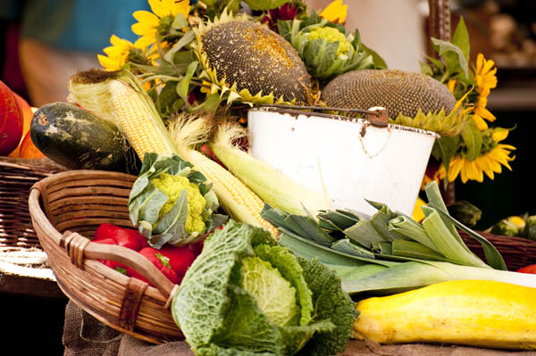

人参果虽然是营养价值很高的水果，但是并不是所有人都适合吃的。像婴幼儿就不适合吃人参果，因为人参果的口感非常硬，婴幼儿吃很容易出现不消化的情况。人参果本身糖分较低，但是因为口感不好培育了高糖的人参果，所以血糖高的和糖尿病患者不适宜吃。

1、年纪太小不适合食用
人参果有着很高的营养价值，但是人参果并不适合年纪太小的孩子食用，这是因为人参果口感不好并且人参果很硬。孩子太小咀嚼不动，可能会出现孩子直接吞服的情况，直接吞服可能会导致人参果卡在孩子的咽喉处或者长时间难以消化导致小孩积食。
2、肠胃功能不好的不适合食用
人参果不适合肠胃功能很差的人食用，因为人参果很硬很难消化，肠胃功能不好的人吃人参果可能会出现消化不良的情况。然后导致食欲不振、恶心、呕吐。
3、血糖高的人不适合食用
人参果本来是糖分低的水果，但是因为糖分太低口感不好，所以后来培育出来高糖分的人参果。像高糖分的人参果血糖高以及糖尿病的患者是不能食用的。孕妇最好也不要吃血糖高的人参果。但是低糖分的人参果是可以食用的。
4、人参果不能同食的食物
人参果有很多不能一起吃的食物，像人参果和蟹类、人参果和萝卜、人参果和螺类、人参果和油炸食品、人参果和萝卜都是不能一起吃的。